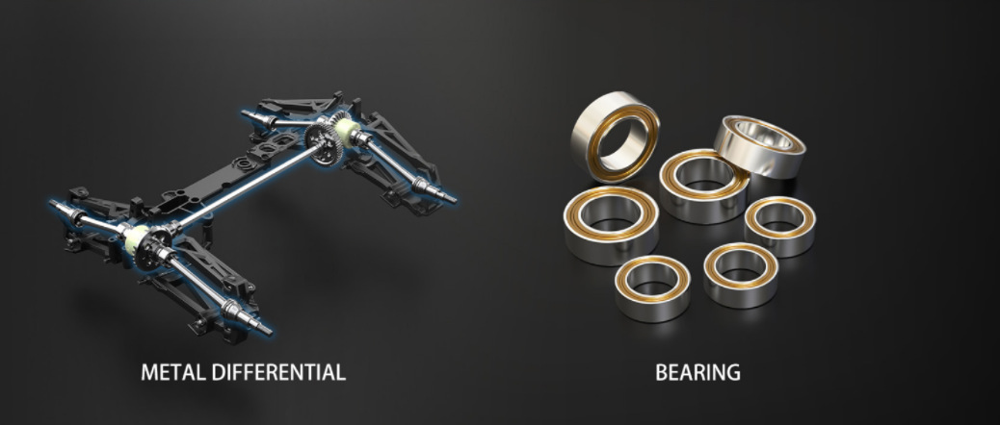
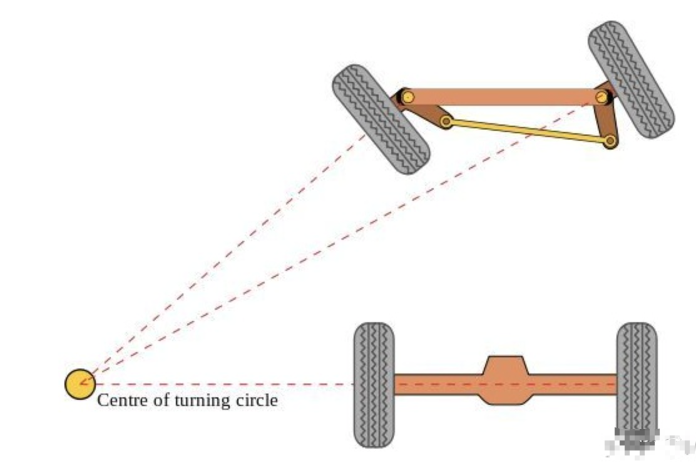
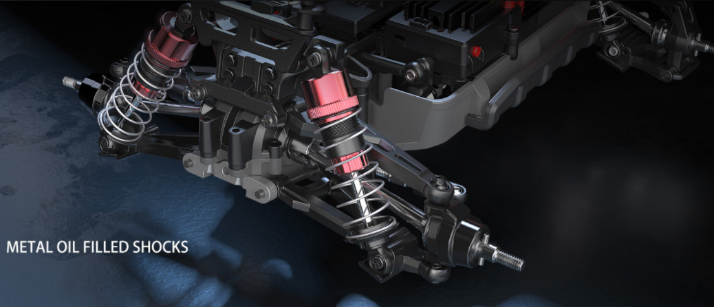
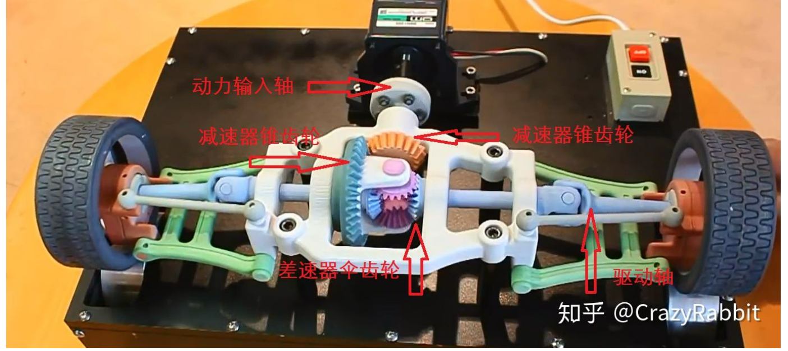
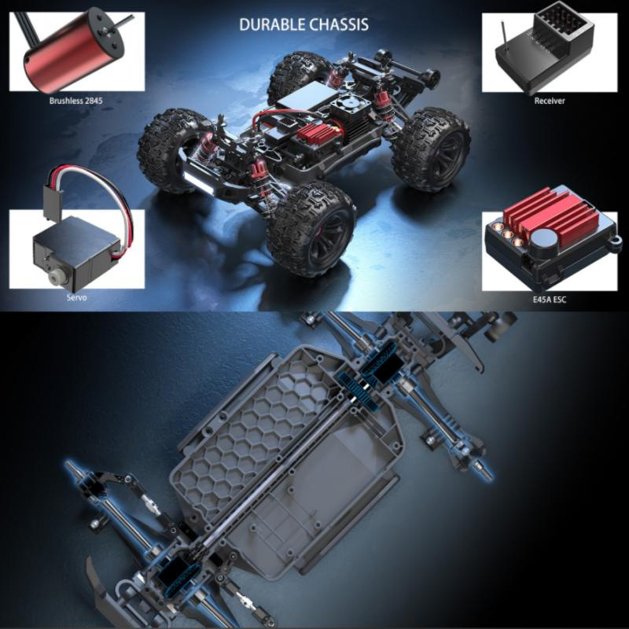
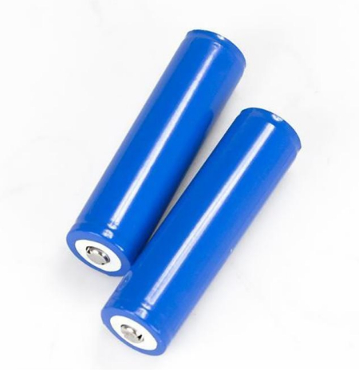
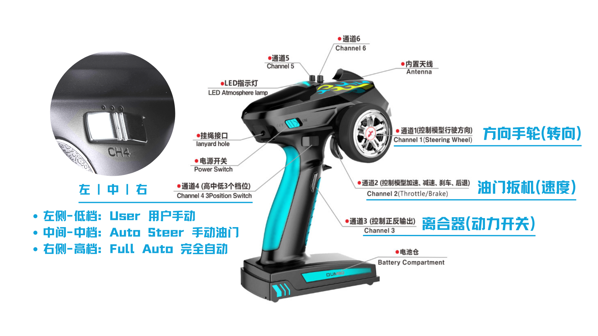

机械架构
机械组成
底盘的机械系统由传动、转向和减震三大系统组成。

转向系统
阿克曼转向是一种现代汽车的转向方式，在汽车转弯的时候，内外轮转过的角度不一样，内侧轮胎转弯半径小于外侧轮胎。下图就是理想的阿克曼转向。 
避震悬挂系统
麦弗逊式悬架是汽车安全结构的重要组成部分，一直以来，汽车的行驶操控性和舒适性与底盘结构中的悬挂系统息息相关，而悬挂结构的简单与复杂也直接决定着汽车制造成本的高低。麦弗逊式独立悬架是众多悬挂系统中的一种，它以结构简单、成本低廉、舒适性尚可的优点赢得了广泛的市场应用。

差速系统
前后桥差速器使得动力输出轴上的两侧车轮断开耦合，实现不等速，从而流畅转弯。

动力三电
电机: 2845四极无刷电机。内转子结构，单位体积和重量下提供比有刷电机更大的扭矩和功率。
电调：45A 3S无刷电调。全称电子调速器，英文Electronic Speed Control，简称ESC。 针对电机不同，可分为有刷电调和无刷电调。 它根据控制信号调节电动机的转速。

电池: 18650锂电池，3串1并，3S锂电池组

遥控系统
RC枪控:
6通道, 频段:2.4GHz, 信号协议:PPM/PWM(航模遥控器标准协议) 接收机: 电压:
3.3V~5V,6 通道, 频段:2.4GHz